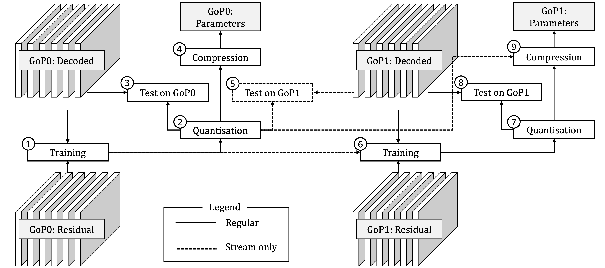

Utilising Low Complexity CNNs to Lift Non-Local Redundancies in Video Coding
Jan P. Klopp, Liang-Gee Chen, Shao-Yi Chien
Graduate Institute of Electrical Engineering, National Taiwan University
Main Results
- Online (at encoding time) trained denoiser
- Design of a highly efficient CNN
- Parameters can be signalled to decoder
- Compared to H265, up to 6.8% coding gain Chroma, up to 14.4% on Luma
- Complexity 216 to 486 MAC/Pixel, a thousand times less than pretrained denoisers
Methods

- Train CNN on the fly to predict residuals of a group of pictures (GoP)
- Quantise the CNN's parameters
- Test the CNN's performance
- Compress parameters and add to bit stream if test is positive
The dashed arrows/boxes indicate data transfer/operations that are only
carried out in streaming scenarios where the decoder can access previous GoP's data.
- Test previously signalled CNN on the new GoP
- Fine-tune CNN on new GoP
- Quantise fine-tuned CNN's parameters
- Test fine-tuned and quantised CNN
- If gains are higher than from previous CNN, compress and add to bit stream
Material
Paper (IEEE Xplore)
Paper (preprint)
Additional Results
We supply a few preliminary results for applying our method to two codecs used in practice: x265 and AV1. For a full
comparision, please refer to the results in the paper (link above), as our method has not been adjusted for x265
or AV1. Comparison is provided in the form of BDRate coding gain over the respective baseline codec, YUV PSNR
values were averaged with weights 6, 1 and 1 as is common practice in video coding.
Comparison w/ x265 as baseline
| | |
GoP: 32 Frames |
GoP: 128 Frames |
| Dataset | Resolution |
Complexity (MAC/pixel) | Coding Gain |
Complexity (MAC/pixel) | Coding Gain |
| HM A |
2560×1600 |
148.5 |
-6.5% |
148.5 |
-6.9% |
| HM B | 1920×1080 |
486 |
-5.5% |
486 |
-5.7% |
| HM C | 832×480 |
486 |
-5.1% |
486 |
-5.4% |
| VTM A | 3840×2160 |
148.5 |
-4.9% |
148.5 |
-5.0% |
| VTM B | 1920×1080 |
148.5 |
-4.5% |
486 |
-5.4% |
Comparison w/ AV1 as baseline
| | |
GoP: 32 Frames |
GoP: 128 Frames |
| Dataset | Resolution |
Complexity (MAC/pixel) | Coding Gain |
Complexity (MAC/pixel) | Coding Gain |
| HM A |
2560×1600 |
148.5 |
-4.8% |
148.5 |
-4.7% |
| HM B | 1920×1080 |
486 |
-4.3% |
486 |
-4.2% |
| HM C | 832×480 |
486 |
-3.8% |
486 |
-4.2% |
| VTM A | 3840×2160 |
148.5 |
-3.0% |
148.5 |
-3.0% |
| VTM B | 1920×1080 |
486 |
-4.0% |
486 |
-3.9% |
Sequences: HM A: NebutaFestival, PeopleOnStreet, SteamLocomotiveTrain, Traffic;
HM B: BasketballDrive, BQTerrace, Cactus, Kimono1, ParkScene; HM C: BasketballDrill, BQMall, PartyScene, RaceHorses;
VTM A: Campfire, CatRobot1, DaylightRoad2, FoodMarket4, ParkRunning3, Tango2; VTM B: BasketballDrive, BQTerrace,
Cactus, MarketPlace, RitualDance
Cite
If you find our work helpful for your research, please consider citing it:
@ARTICLE{9088301,
author={J. P. {Klopp} and L. {Chen} and S. {Chien}},
journal={IEEE Transactions on Image Processing},
title={Utilising Low Complexity CNNs to Lift Non-Local Redundancies in Video Coding},
year={2020},
volume={},
number={},
pages={1-1},
doi={10.1109/TIP.2020.2991525},
ISSN={1941-0042},
month={},}